OSChina的使用
- 一.进入到OSChina网页登陆/注册账号https://git.oschina.net 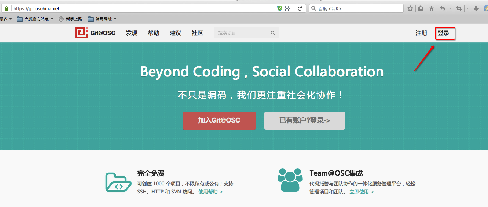
- 二.创建项目
1.点击创建项目
2.填写创建项目信息
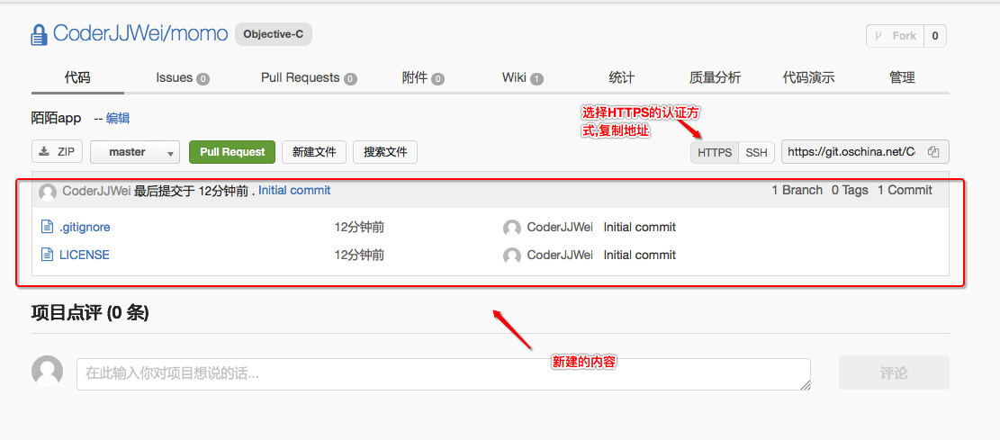3.查看创建好的项目,使用HTTPS认证,复制地址
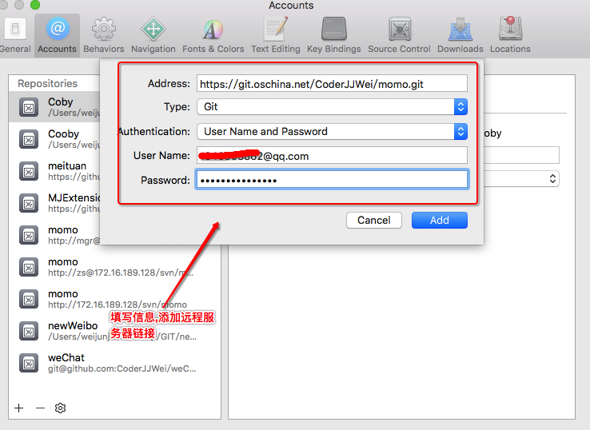4.xcode->偏好设置->添加远程仓库
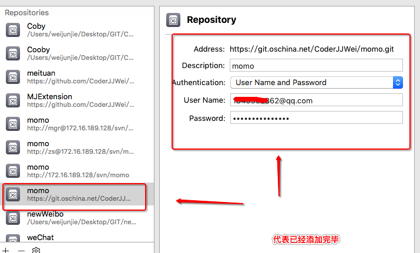5.看到以下界面说明添加成功6.点击Source Control -> checkout 选择刚添加的远程仓库
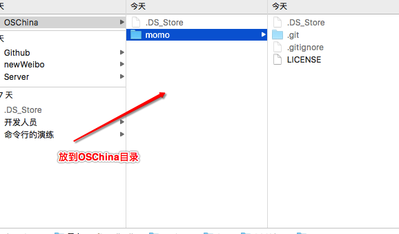7.在GIT文件夹创建OSChina文件夹,并将所有东西下载到该文件夹
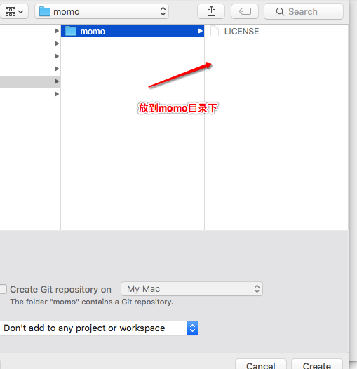8.创建momo项目到momo的文件夹下
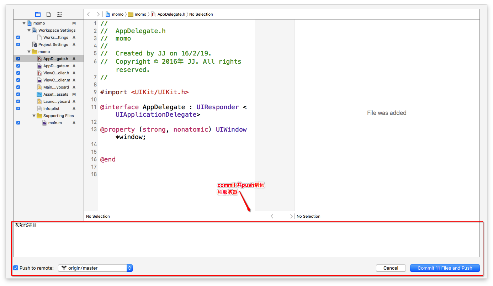9.commit提交并push到远程仓库10.OSChina查看提交的最新的内容
- 三.添加其他成员进行合作开发
1.在仓库界面点击管理
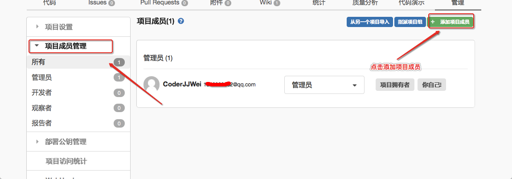2.点击项目成员管理,点击添加项目成员
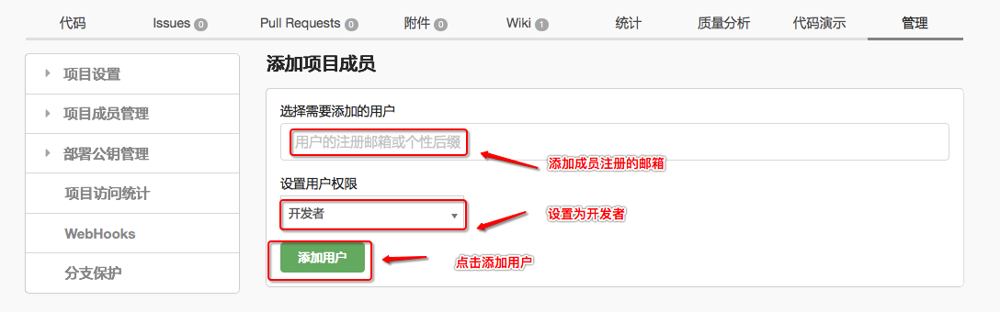3.添加成员邮箱和权限后点击添加 - 四.查看如何添加SSH Key以及权限的含义
1.点击黑色人图标2.点击SSH公钥
3.此处可以填写标题和公钥,点击如何生成
4.在此界面可以查看如何生成SSH Key以及权限等的含义 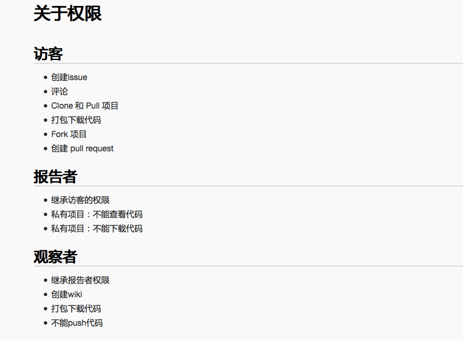
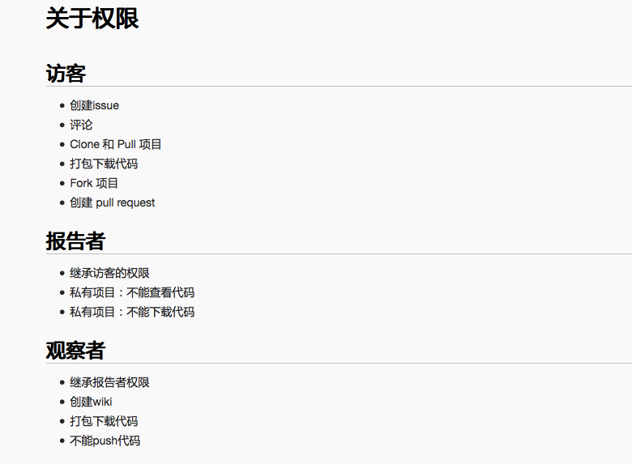 - 五.总结
1.OSChina的使用与Github一致,都能使用SSH与Https的认证方式. 2.OSChina可以免费创建私有仓库,而Github私有的需要收费 3.OSChina在国内传输速度快